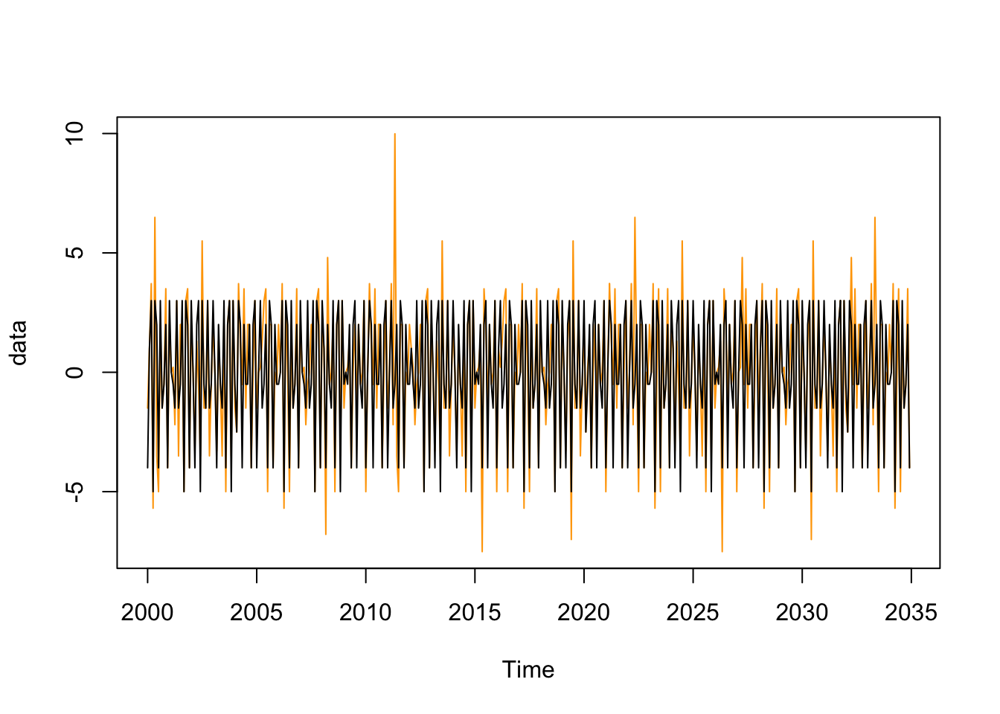

# # Configurer si besoin le proxy
# proxy <- "proxy_a_definir"
# Sys.setenv(HTTPS_PROXY = proxy)
remotes::install_github("rjdemetra/rjd3toolkit",
INSTALL_opts = "--no-multiarch")2 - Correction des jours ouvrables
Désaisonnaliser une série temporelle
L’objectif de ce TP est d’apprendre à créer des régresseurs jours ouvrables personnalisés, à les utiliser dans RJDemetra/JDemetra+ et à vérifier la qualité de la correction.
Pour créer des régresseurs jours ouvrables personnalisés, deux solutions :
Le faire depuis JDemetra+, en créant un calendrier personnalisé puis en exportant les régresseurs. Voir par exemple la documentation de JDemetra+ ici et là.
Créer le calendrier depuis R à l’aide du package
rjd3toolkit.
Ce package n’étant pas sur le CRAN, pour les installer on peut par exemple utiliser la fonction remotes::install_github() :
Dans ce TP, nous nous intéresserons uniquement à la seconde option. En effet, le package R est plus flexible et permet de créer des régresseurs moins classiques que les working days et trading days.
Pour installer tous les packages utiles de ce TP, lancer le programme :
packages_to_install <- c("RJDemetra", "remotes")
packages <- packages_to_install[! packages_to_install %in% installed.packages()[,"Package"]]
if (length(packages) > 0) {
install.packages(packages)
}
packages_to_install_git <- c("rjd3toolkit", "rjd3x13", "rjd3tramoseats", "rjd3providers", "rjdemetra3")
packages_git <- packages_to_install_git[! packages_to_install_git %in% installed.packages()[,"Package"]]
if (length(packages_git) > 0) {
# # Configurer si besoin le proxy
# proxy <- "proxy_a_definir"
# Sys.setenv(HTTPS_PROXY = proxy)
remotes::install_github(
sprintf("rjdemetra/%s", packages_git),
# option utile dans certaines installations portables de Java :
INSTALL_opts = "--no-multiarch")
}1 Création de régresseurs JO avec rjd3toolkit
1.1 Création d’un calendrier
Par défaut, les régresseurs jours ouvrables de JDemetra+ ne prennent pas en compte les spécificité calendaires des pays : on ne prend pas en compte les jours fériés. Pour les prendre en compte, il faut créer son propre calendrier où l’on supposera qu’un jour férié de plus dans le mois a le même effet qu’un dimanche.
library(rjd3toolkit)Trois fonctions peuvent être utilisées pour ajouter des jours fériés :
fixed_day()pour ajouter un jour férié qui tombe à date fixe. Par exemple, pour ajouter le 8 mai :
fixed_day(month = 5, day = 8)easter_day()pour ajouter un jour férié dont le jour dépend de Pâques : le paramètreoffsetpermet de spécifier le nombre de jours avant (si négatif) ou après Pâques (si positif). Par exemple, pour ajouter la Pentecôte qui a lieu 60 jours après Pâques :
easter_day(offset = 60)single_day()pour ajouter un jour ferié qui n’a eu lieu qu’une seule fois.
single_day("1993-01-15")fixed_week_day()qui permet d’ajouter des jours fériés qui apparaissent certaines semaines de certains mois (par exemple le premier lundi du mois de septembre aux USA)
fixed_week_day(9, 1, 1) # first Monday(1) of September.special_day()qui permet d’ajouter des jours fériés par rapport à des dates déjà connues dans JDemetra+ (voir tableau ci-dessous). Comme pour la fonctioneaster_day(), le paramètreoffsetpermet de spécifier la position du jour voulu par rapport rapport à la fête pré-spécifié (par défautoffset = 0, le jour férié coïncide avec le jour pré-spécifié). Par exemple, pour ajouter le nouvel an :
special_day("NEWYEAR")| Event | Définition |
|---|---|
| NEWYEAR | Fête fixe, 1er janvier. |
| SHROVEMONDAY | Fête mobile, lundi avant le mecredi des cendres (48 jours avant pâques). |
| SHROVETUESDAY | Fête mobile, mardi avant le mecredi des cendres (47 jours avant pâques). |
| ASHWEDNESDAY | Fête mobile, 46 jours avant Pâques. |
| EASTER | Fête mobile, Pâques, varie entre le 22 mars et le 25 avril. |
| MAUNDYTHURSDAY | Fête mobile, le jeudi avant Pâques. |
| GOODFRIDAY | Fête mobile, le vendredi avant Pâques. |
| EASTERMONDAY | Fête mobile, le lendemain de Pâques. |
| ASCENSION | Fête mobile, célébrée un jeudi, 40 jours après Pâques. |
| PENTECOST | Fête mobile, 50 jours après Pâques. |
| CORPUSCHRISTI | Fête mobile, 60 jours après Pâques. |
| WHITMONDAY | Fête mobile, le jour après la Pentecôte. |
| MAYDAY | Fête fixe, 1er mai. |
| ASSUMPTION | Fête fixe, 15 août. |
| HALLOWEEN | Fête fixe, 31 octobre. |
| ALLSAINTSDAY | Fête fixe, 1er novembre. |
| ARMISTICE | Fête fixe, 11 novembre. |
| CHRISTMAS | Fête fixe, 25 décembre. |
Exercice
Créer un calendrier qui contient tous les jours fériés de la France.
Solution
FR <- national_calendar(list(
special_day("NEWYEAR"),
special_day("EASTERMONDAY"), # Lundi de Pâques
special_day("MAYDAY"), # 1er mai
special_day("ASCENSION"), # Jour de l'Ascension
fixed_day(5, 8),
special_day("WHITMONDAY"), # Lundi de Pentecôte
fixed_day(7, 14),
special_day("ASSUMPTION"), # Assomption
special_day("ALLSAINTSDAY"), # Toussaint
special_day("ARMISTICE")
))1.2 Création de régresseurs JO
Le modèle général de correction de jours ouvrables peut s’écrire de la façon suivante : \[ X_t = \sum_{i=1}^{7} \alpha_i N_{it} + \varepsilon_t \] Avec :
\(N_{it}\) le nombre de jours de lundis (\(i=1\)), …, dimanches et jours fériés (\(i=7\))
\(\alpha_i\) l’effet d’un jour de type \(i\)
Pour éviter les problèmes de multi-colinéarité, on réécrit le modèle en utilisant une modalité de référence (ici dimanche). On désaisonnalise également les régresseurs en enlevant la moyenne de long-terme : \[X_t = \sum_{i=1}^{6} \beta_i (N_{it} - N_{7t}) + \bar{\alpha} \underbrace{(N_t - \bar{N}_t)}_{LY_t} + \varepsilon_t\] Ce modèle peut être simplifié si en faisant des hypothèses sur les effets des jours ouvrés :
L’hypothèse working days correspond au cas où l’on suppose que tous les jours de la semaine (lundi à vendredi) ont le même effet (\(\alpha_1=\dots=\alpha_5\)), les samedis et les dimanches (et jours fériés) ont le même effet (\(\alpha_6=\alpha_7\)) et sont utilisés en tant que variable de contraste.
L’hypothèse trading days correspond au cas où l’on suppose que tous les jours ont un effet différent et les dimanches (et jours fériés) sont utilisés en tant que variable de constrate.
Sous JDemetra+ on ne peut utiliser que ces deux hypothèses mais rjd3toolkit permet de construire d’autres types de JO.
De manière plus générale, lorsque l’on utilise une variable de contraste, les régresseurs \(CJO_{t,i}\) associé au groupe \(i\) est calculé de la façon suivante : \[ CJO_{t,i} = \underbrace{\sum_{j\in\text{groupe }i}N_{jt}}_{ \text{nb de jours du groupe }i } - \frac{\sum_{j\in\text{groupe }i}1}{\sum_{j\in\text{groupe }0}1} \times \underbrace{\sum_{j\in\text{groupe }0}N_{jt}}_{ \text{nb de jours du groupe contraste} } \] Dans le cas working days, il y a 2 jours dans le groupe contraste (samedi et dimanche, \(\sum_{j\in\text{groupe }0}1=2\)) et 5 jours dans le groupe 1 (lundi à vendredi, \(\sum_{j\in\text{groupe }1}1=5\)). Au mois \(t\), le régresseurs JO type de jours est donc égal au nombre de jours de la semaine dans le mois, mois \(5/2\times\) nombre de jours de week-end.
Les régresseurs JO peuvent être créés à partir de 2 fonctions : htd() qui permet de les créer à partir d’un calendrier spécifique et td(). Dans ces fonctions, le paramètre le plus important est groups pour permet de faire des hypothèses sur les jours. C’est un vecteur de longueur 7 (le nombre de jours de la semaine) dont chaque élément indique à quel groupe le jour de la semaine associé correspond. La variable de contraste est associé au groupe 0.
Par exemple, groups = c(1,2,3,4,5,6,0) correspond au trading days et groups = c(1,1,1,1,1,0,0) correspond au working days.
Par exemple :
groups <- c(1, 2, 3, 4, 5, 6, 0)
frequency <- 12
start <- c(2000,1)
wkd <- calendar_td(FR, frequency = frequency, start = start, length = 12*35,
groups = groups)
wkd <- ts(wkd, start = start, frequency = frequency)
Exercice
Comparer le régresseurs JO working days créé avec le calendrier français et celui sans hypothèse sur les jours fériés (fonction td()).
Solution
groups <- c(1, 1, 1, 1, 1, 0, 0)
frequency <- 12
start <- c(2000,1)
wkd <- calendar_td(FR, frequency = frequency, start = start, length = 12*35,
groups = groups)
wkd <- ts(wkd, start = start, frequency = frequency)
wkd_def <- td(frequency = frequency, start = start, length = 12*35,
groups = groups)
wkd_def <- ts(wkd_def, start = start, frequency = frequency)
data <- ts.union(wkd, wkd_def)
plot(data, col = c("orange","black"),
plot.type = "single")
1.3 Régresseur leap year
Le régresseur année bissextile (leap year), \(LY_t\) doit être créé à la main. Il est égal à la différence entre le nombre de jours dans le mois \(t\) et le nombre de jours moyens dans le mois \(t\), \(\bar N_t\). Tous les mois ont le même nombre de jours, sauf le mois de février qui est de 29 jours tous les 4 ans. \(\bar N_t\) est donc égal à 30 ou 31 si le mois considéré n’est pas un mois de février (et donc \(N_t - \bar N_t=0\)) à 28,25 en février1. \[ LY_{t} = \begin{cases} 0,75 & \mbox{si } t \mbox{ est un mois de février bissextil } \\ -0,25 & \mbox{si } t \mbox{ est un mois de février non bissextil } \\ 0 & \mbox{sinon} \end{cases} \]
Exercice
Créer une fonction leap_year qui permet de générer le régresseur leap year.
Solution
leap_year <- function(start = 1990, end = 2030, frequency = 12){
ly <- ts(0, start = start, end = end, frequency = 12)
mois_feb <- cycle(ly) == 2
annees <- trunc(round(time(ly), 3)) # arrondi car parfois des pbs avec fonction time
# On utilise la définition exacte
is_ly <- (annees %% 400 == 0) |
((annees %% 4 == 0) & (annees %% 100 != 0))
ly[mois_feb] <- 28 - 28.2425
ly[mois_feb & is_ly] <- 29 - 28.2425
# on change si besoin la fréquence
stats::aggregate(ly, nfrequency = frequency)
}
leap_year(frequency = 12) Jan Feb Mar Apr May Jun Jul Aug Sep
1990 0.0000 -0.2425 0.0000 0.0000 0.0000 0.0000 0.0000 0.0000 0.0000
1991 0.0000 -0.2425 0.0000 0.0000 0.0000 0.0000 0.0000 0.0000 0.0000
1992 0.0000 0.7575 0.0000 0.0000 0.0000 0.0000 0.0000 0.0000 0.0000
1993 0.0000 -0.2425 0.0000 0.0000 0.0000 0.0000 0.0000 0.0000 0.0000
1994 0.0000 -0.2425 0.0000 0.0000 0.0000 0.0000 0.0000 0.0000 0.0000
1995 0.0000 -0.2425 0.0000 0.0000 0.0000 0.0000 0.0000 0.0000 0.0000
1996 0.0000 0.7575 0.0000 0.0000 0.0000 0.0000 0.0000 0.0000 0.0000
1997 0.0000 -0.2425 0.0000 0.0000 0.0000 0.0000 0.0000 0.0000 0.0000
1998 0.0000 -0.2425 0.0000 0.0000 0.0000 0.0000 0.0000 0.0000 0.0000
1999 0.0000 -0.2425 0.0000 0.0000 0.0000 0.0000 0.0000 0.0000 0.0000
2000 0.0000 0.7575 0.0000 0.0000 0.0000 0.0000 0.0000 0.0000 0.0000
2001 0.0000 -0.2425 0.0000 0.0000 0.0000 0.0000 0.0000 0.0000 0.0000
2002 0.0000 -0.2425 0.0000 0.0000 0.0000 0.0000 0.0000 0.0000 0.0000
2003 0.0000 -0.2425 0.0000 0.0000 0.0000 0.0000 0.0000 0.0000 0.0000
2004 0.0000 0.7575 0.0000 0.0000 0.0000 0.0000 0.0000 0.0000 0.0000
2005 0.0000 -0.2425 0.0000 0.0000 0.0000 0.0000 0.0000 0.0000 0.0000
2006 0.0000 -0.2425 0.0000 0.0000 0.0000 0.0000 0.0000 0.0000 0.0000
2007 0.0000 -0.2425 0.0000 0.0000 0.0000 0.0000 0.0000 0.0000 0.0000
2008 0.0000 0.7575 0.0000 0.0000 0.0000 0.0000 0.0000 0.0000 0.0000
2009 0.0000 -0.2425 0.0000 0.0000 0.0000 0.0000 0.0000 0.0000 0.0000
2010 0.0000 -0.2425 0.0000 0.0000 0.0000 0.0000 0.0000 0.0000 0.0000
2011 0.0000 -0.2425 0.0000 0.0000 0.0000 0.0000 0.0000 0.0000 0.0000
2012 0.0000 0.7575 0.0000 0.0000 0.0000 0.0000 0.0000 0.0000 0.0000
2013 0.0000 -0.2425 0.0000 0.0000 0.0000 0.0000 0.0000 0.0000 0.0000
2014 0.0000 -0.2425 0.0000 0.0000 0.0000 0.0000 0.0000 0.0000 0.0000
2015 0.0000 -0.2425 0.0000 0.0000 0.0000 0.0000 0.0000 0.0000 0.0000
2016 0.0000 0.7575 0.0000 0.0000 0.0000 0.0000 0.0000 0.0000 0.0000
2017 0.0000 -0.2425 0.0000 0.0000 0.0000 0.0000 0.0000 0.0000 0.0000
2018 0.0000 -0.2425 0.0000 0.0000 0.0000 0.0000 0.0000 0.0000 0.0000
2019 0.0000 -0.2425 0.0000 0.0000 0.0000 0.0000 0.0000 0.0000 0.0000
2020 0.0000 0.7575 0.0000 0.0000 0.0000 0.0000 0.0000 0.0000 0.0000
2021 0.0000 -0.2425 0.0000 0.0000 0.0000 0.0000 0.0000 0.0000 0.0000
2022 0.0000 -0.2425 0.0000 0.0000 0.0000 0.0000 0.0000 0.0000 0.0000
2023 0.0000 -0.2425 0.0000 0.0000 0.0000 0.0000 0.0000 0.0000 0.0000
2024 0.0000 0.7575 0.0000 0.0000 0.0000 0.0000 0.0000 0.0000 0.0000
2025 0.0000 -0.2425 0.0000 0.0000 0.0000 0.0000 0.0000 0.0000 0.0000
2026 0.0000 -0.2425 0.0000 0.0000 0.0000 0.0000 0.0000 0.0000 0.0000
2027 0.0000 -0.2425 0.0000 0.0000 0.0000 0.0000 0.0000 0.0000 0.0000
2028 0.0000 0.7575 0.0000 0.0000 0.0000 0.0000 0.0000 0.0000 0.0000
2029 0.0000 -0.2425 0.0000 0.0000 0.0000 0.0000 0.0000 0.0000 0.0000
2030 0.0000
Oct Nov Dec
1990 0.0000 0.0000 0.0000
1991 0.0000 0.0000 0.0000
1992 0.0000 0.0000 0.0000
1993 0.0000 0.0000 0.0000
1994 0.0000 0.0000 0.0000
1995 0.0000 0.0000 0.0000
1996 0.0000 0.0000 0.0000
1997 0.0000 0.0000 0.0000
1998 0.0000 0.0000 0.0000
1999 0.0000 0.0000 0.0000
2000 0.0000 0.0000 0.0000
2001 0.0000 0.0000 0.0000
2002 0.0000 0.0000 0.0000
2003 0.0000 0.0000 0.0000
2004 0.0000 0.0000 0.0000
2005 0.0000 0.0000 0.0000
2006 0.0000 0.0000 0.0000
2007 0.0000 0.0000 0.0000
2008 0.0000 0.0000 0.0000
2009 0.0000 0.0000 0.0000
2010 0.0000 0.0000 0.0000
2011 0.0000 0.0000 0.0000
2012 0.0000 0.0000 0.0000
2013 0.0000 0.0000 0.0000
2014 0.0000 0.0000 0.0000
2015 0.0000 0.0000 0.0000
2016 0.0000 0.0000 0.0000
2017 0.0000 0.0000 0.0000
2018 0.0000 0.0000 0.0000
2019 0.0000 0.0000 0.0000
2020 0.0000 0.0000 0.0000
2021 0.0000 0.0000 0.0000
2022 0.0000 0.0000 0.0000
2023 0.0000 0.0000 0.0000
2024 0.0000 0.0000 0.0000
2025 0.0000 0.0000 0.0000
2026 0.0000 0.0000 0.0000
2027 0.0000 0.0000 0.0000
2028 0.0000 0.0000 0.0000
2029 0.0000 0.0000 0.0000
2030 # ou rjd3toolkit::lp_variable()On peut également uiliser la fonction rjd3toolkit::ts_adjust() pour préajuster de l’effet année bissextile.
1.4 Exercice bilan
Exercice
Créer un objet regresseurs_JO qui contiendra tous les jeux de régresseurs plausibles. Par exemple :
le régresseur leap year
le jeu de régresseur trading days (
TD7, lundi à samedi, dimanche = contraste)le jeu de régresseur working days (
TD2, lundi =… = vendredi, samedi=dimanche=contraste)le jeu
TD3: lundi = … = vendredi, samedi et dimanche = contraste
Solution
La solution montre comment créer tous les régresseurs de JDemetra+ 3.0.0
frequency <- 12
gen_calendrier <- function(cal, frequency, start = c(1990, 1), end = c(2030, 1)) {
length = (end[1] - start[1]) * frequency + end[2] - start[2]
ly <- rjd3toolkit::lp_variable(frequency = frequency, start = start,
length = length)
# N'hésitez pas à ajouter les votre !
TD7 <- calendar_td(cal, frequency = frequency, start = start, length = length,
groups = c(1, 2, 3, 4, 5, 6, 0))
TD4 <- calendar_td(cal, frequency = frequency, start = start, length = length,
groups = c(1, 1, 1, 1, 2, 3, 0))
TD3 <- calendar_td(cal, frequency = frequency, start = start, length = length,
groups = c(1, 1, 1, 1, 1, 2, 0))
TD3c <- calendar_td(cal, frequency = frequency, start = start, length = length,
groups = c(1, 1, 1, 1, 2, 2, 0))
TD2 <- calendar_td(cal, frequency = frequency, start = start, length = length,
groups = c(1, 1, 1, 1, 1, 0, 0))
TD2c <- calendar_td(cal, frequency = frequency, start = start, length = length,
groups = c(1, 1, 1, 1, 1, 1, 0))
reg_jo <- ts(cbind(TD2, TD2c, TD3, TD3c, TD4, TD7),
start = start, frequency = frequency)
reg_jo <- ts.intersect(reg_jo,
ly)
colnames(reg_jo) <- c(
"TD2_semaine",
"TD2c_lundi_samedi",
sprintf("TD3_%s", c("semaine", "samedi")),
sprintf("TD3c_%s", c("lundi_jeudi", "vendredi_samedi")),
sprintf("TD4_%s", c("lundi_jeudi", "vendredi", "samedi")),
sprintf("TD7_%s", c("lundi", "mardi", "mercredi", "jeudi", "vendredi", "samedi")),
"leap_year")
reg_jo
}
regresseurs_JO <- gen_calendrier(FR, frequency = 12)1.5 Effet graduel de Pâques
Prenons l’exemple de la vente de chocolats. Il est assez commun d’offrir des chocolats à Pâques : il y a donc une hausse des ventes autour du lundi de Pâques. Toutefois, ces ventes ne se font pas le jour de Pâques mais plusieurs jours avant, et plus on se rapproche du jour J, plus ces ventes sont importantes. C’est ce que l’on appel l’effet graduel de Pâques. Sous JDemetra+ on peut définir le nombre de jours avant Pâques pour lequel on considère qu’il y a un effet (easter_day.duration, entre 1 et 20) ou laisser ce choix à JDemetra+.
Exercice
Serait-il pertinent de considérer un effet graduel de Noël dans le modèle Reg-ARIMA ?
Solution
Non car l’effet graduel de Noël est en fait saisonnier car c’est un jour fixe ! Pour Pâques, comme c’est une fête mobile, les jours précédents peuvent être dans des mois différents en fonction de l’année considérée. Je ne suis pas entré dans les détails mais le régresseur utilisé pour la correction de l’effet graduel de Pâques est désaisonnalisé pour ne prendre en compte que l’effet voulu
Le régresseur associé à l’effet graduel de Pâques peut être généré en utilisant la fonction rjd3toolkit::easter_variable().
2 Utilisation des régresseurs dans RJDemetra
Dans RJDemetra, pour utiliser nos régresseurs jours ouvrables personnalisés, il faut créer sa propre spécification (fonctions x13_spec() ou regarima_spec_x13()) en utilisant l’option usrdef.varEnabled = TRUE, en spécifiant les régresseurs dans usrdef.var et indiquant que les régresseurs sont des régresseurs calendaires avec l’option usrdef.varType = "Calendar". Par exemple :
library(RJDemetra)
ipi_fr <- ipi_c_eu[, "FR"]
# On arrête la série en décembre 2019 pour éviter les changements de résultats
# liés aux futures actualisation des données de RJDemetra
ipi_fr <- window(ipi_fr, end = c(2019, 12))
# on garde le jeu reg6
wkd <- regresseurs_JO[,c(grep("TD7", colnames(regresseurs_JO), value = TRUE),
"leap_year")]
# Pour simplifier l'output, on enlève le "TD7_"
# mais ce n'est pas obligatoire
colnames(wkd) <- gsub("TD7_", "", colnames(wkd))
myspec1 <- regarima_spec_x13(spec = "RG5c",
usrdef.varEnabled = TRUE,
usrdef.var = wkd,
usrdef.varType = "Calendar",
easter.enabled = FALSE)
myreg1 <- regarima(ipi_fr, myspec1)
summary(myreg1)y = regression model + arima (0, 1, 1, 0, 1, 1)
Model: RegARIMA - X13
Estimation span: from 1-1990 to 12-2019
Log-transformation: yes
Regression model: no mean, trading days effect(7), no leap year effect, no Easter effect, outliers(2)
Coefficients:
ARIMA:
Estimate Std. Error T-stat Pr(>|t|)
Theta(1) -0.49684 0.04765 -10.43 <2e-16 ***
BTheta(1) -0.63951 0.04259 -15.01 <2e-16 ***
---
Signif. codes: 0 '***' 0.001 '**' 0.01 '*' 0.05 '.' 0.1 ' ' 1
Regression model:
Estimate Std. Error T-stat Pr(>|t|)
lundi 0.003597 0.001232 2.920 0.003727 **
mardi 0.009278 0.001378 6.735 6.82e-11 ***
mercredi 0.005957 0.001403 4.246 2.80e-05 ***
jeudi 0.011928 0.001463 8.154 6.66e-15 ***
vendredi 0.005258 0.001427 3.686 0.000264 ***
samedi -0.014409 0.001289 -11.176 < 2e-16 ***
leap_year 0.020025 0.005427 3.690 0.000260 ***
LS (11-2008) -0.080465 0.014119 -5.699 2.58e-08 ***
LS (1-2009) -0.070533 0.014138 -4.989 9.62e-07 ***
---
Signif. codes: 0 '***' 0.001 '**' 0.01 '*' 0.05 '.' 0.1 ' ' 1
Residual standard error: 0.01707 on 335 degrees of freedom
Log likelihood = 916.7, aic = 1396, aicc = 1397, bic(corrected for length) = -7.955
Pour information
Pour ne pas repartir de zéro et avoir des modèles, il y a sous JDemetra+ 13 spécifications pré-définies décrites ici ou dans l’aide des fonction RJDemetra associés (?regarima, ?x13 ou ?tramoseats).
Pour faire des tests multiples sur les régresseurs jours ouvrables, on peut utiliser la fonction car::linearHypothesis(). Dans le modèle précédent, il parait clair que les régresseurs jours ouvrables sont significatifs. Toutefois, on peut se demander, si par parcimonie on peut simplifier le modèle en regroupant les jours de la semaine :
library(car)
linearHypothesis(myreg1,
c("lundi", "mardi", "mercredi", "jeudi", "vendredi", "samedi"),
c(0, 0, 0, 0, 0, 0), test = "F")Linear hypothesis test
Hypothesis:
lundi = 0
mardi = 0
mercredi = 0
jeudi = 0
vendredi = 0
samedi = 0
Model 1: restricted model
Model 2: myreg1
Res.Df Df F Pr(>F)
1 341
2 335 6 207.82 < 2.2e-16 ***
---
Signif. codes: 0 '***' 0.001 '**' 0.01 '*' 0.05 '.' 0.1 ' ' 1linearHypothesis(myreg1,
c("lundi = mardi","mardi = mercredi","mercredi = jeudi","jeudi = vendredi"), test = "F")Linear hypothesis test
Hypothesis:
lundi - mardi = 0
mardi - mercredi = 0
mercredi - jeudi = 0
jeudi - vendredi = 0
Model 1: restricted model
Model 2: myreg1
Res.Df Df F Pr(>F)
1 339
2 335 4 4.9866 0.0006461 ***
---
Signif. codes: 0 '***' 0.001 '**' 0.01 '*' 0.05 '.' 0.1 ' ' 1
Exercice
Essayez maintenant sur vos propres séries. Tester de laisser ou non l’effet graduel de Pâques (easter.enabled = TRUE).
3 Utilisation des régresseurs dans rjdemetra3
Dans rjdemetra3, pour utiliser nos régresseurs jours ouvrables personnalisés, il faut :
créer sa propre spécification (fonctions
rjd3x13::x13_spec()ourjd3x13::regarima_spec)ajouter les régresseurs dans le contexte grâce au paramètre
contextderjd3x13::x13()et avec la fonctionrjd3toolkit::modelling_context()modifier la spécification avec la fonction
rjd3toolkit::set_tradingdays().
ipi_fr <- RJDemetra::ipi_c_eu[, "FR"]
ctxt <- rjd3toolkit::modelling_context(
# on crée un groupe de variables "cjo" contenant les régresseurs
variables = list(cjo = regresseurs_JO)
)
spec1_jd3 <- rjd3x13::spec_regarima("rg5c") |>
rjd3toolkit::set_tradingdays(
option = "UserDefined",
uservariable = paste0("cjo.", c(grep("TD7", colnames(regresseurs_JO), value = TRUE),
"leap_year"))
)
reg1_jd3 <- rjd3x13::regarima(ipi_fr, spec1_jd3, ctxt)
summary(reg1_jd3)Log-transformation: no
SARIMA model: (0,1,1) (0,1,1)
Coefficients
Estimate Std. Error T-stat Pr(>|t|)
theta(1) -0.51202 0.04678 -10.95 <2e-16 ***
btheta(1) -0.55596 0.05261 -10.57 <2e-16 ***
---
Signif. codes: 0 '***' 0.001 '**' 0.01 '*' 0.05 '.' 0.1 ' ' 1
Regression model:
Estimate Std. Error T-stat Pr(>|t|)
cjo.TD7_lundi 0.3291 0.1342 2.453 0.014659 *
cjo.TD7_mardi 0.9651 0.1423 6.781 5.21e-11 ***
cjo.TD7_mercredi 0.5998 0.1454 4.125 4.65e-05 ***
cjo.TD7_jeudi 1.1245 0.1533 7.334 1.60e-12 ***
cjo.TD7_vendredi 0.5439 0.1478 3.681 0.000270 ***
cjo.TD7_samedi -1.4565 0.1335 -10.913 < 2e-16 ***
cjo.leap_year 1.9840 0.5456 3.637 0.000318 ***
easter -1.1814 0.3735 -3.164 0.001697 **
LS (2008-11-01) -8.8340 1.4826 -5.958 6.29e-09 ***
LS (2009-01-01) -7.0031 1.4846 -4.717 3.48e-06 ***
AO (2020-03-01) -20.8423 1.8064 -11.538 < 2e-16 ***
TC (2020-04-01) -37.3780 1.8870 -19.809 < 2e-16 ***
---
Signif. codes: 0 '***' 0.001 '**' 0.01 '*' 0.05 '.' 0.1 ' ' 1
Number of observations: 372 , Number of effective observations: 359 , Number of parameters: 15
Loglikelihood: -731.5383
Standard error of the regression (ML estimate): 1.844427
AIC: 1493.077 , AICc: 1494.476 , BIC: 1551.326 Une autre façon de faire est d’ajouter le calendrier de la France comme calendrier par défaut, ce qui permet de garder les options de JDemetra+ comme le préajustement de l’effet leap-year ou la sélection automatique des jeux de régresseurs.
ctxt <- rjd3toolkit::modelling_context(
# on appelle "FR" le calendrier
calendars = list(FR = FR),
# on crée un groupe de variables "cjo" contenant les régresseurs
variables = list(cjo = regresseurs_JO)
)
spec2_jd3 <- rjd3x13::spec_regarima("rg5c") |>
rjd3toolkit::set_tradingdays(
calendar.name = "FR"
)
reg2_jd3 <- rjd3x13::regarima(ipi_fr, spec2_jd3, ctxt)
summary(reg2_jd3)Log-transformation: no
SARIMA model: (0,1,1) (0,1,1)
Coefficients
Estimate Std. Error T-stat Pr(>|t|)
theta(1) -0.51202 0.04678 -10.95 <2e-16 ***
btheta(1) -0.55596 0.05261 -10.57 <2e-16 ***
---
Signif. codes: 0 '***' 0.001 '**' 0.01 '*' 0.05 '.' 0.1 ' ' 1
Regression model:
Estimate Std. Error T-stat Pr(>|t|)
monday 0.3291 0.1342 2.453 0.014659 *
tuesday 0.9651 0.1423 6.781 5.21e-11 ***
wednesday 0.5998 0.1454 4.125 4.65e-05 ***
thursday 1.1245 0.1533 7.334 1.60e-12 ***
friday 0.5439 0.1478 3.681 0.000270 ***
saturday -1.4565 0.1335 -10.913 < 2e-16 ***
lp 1.9840 0.5456 3.637 0.000318 ***
easter -1.1814 0.3735 -3.164 0.001697 **
LS (2008-11-01) -8.8340 1.4826 -5.958 6.29e-09 ***
LS (2009-01-01) -7.0031 1.4846 -4.717 3.48e-06 ***
AO (2020-03-01) -20.8423 1.8064 -11.538 < 2e-16 ***
TC (2020-04-01) -37.3780 1.8870 -19.809 < 2e-16 ***
---
Signif. codes: 0 '***' 0.001 '**' 0.01 '*' 0.05 '.' 0.1 ' ' 1
Number of observations: 372 , Number of effective observations: 359 , Number of parameters: 15
Loglikelihood: -731.5383
Standard error of the regression (ML estimate): 1.844427
AIC: 1493.077 , AICc: 1494.476 , BIC: 1551.326
Exercice
Pourquoi les deux modèles sont différents ?
Solution
Le modèle étant multiplicatif, la série est pré-ajustée de l’effet année bissextile, ce qui fait que le régresseur n’est pas utilisé !
Pour faire des tests multiples sur les régresseurs jours ouvrables, on peut utiliser la fonction car::linearHypothesis(). Dans le modèle précédent, il parait clair que les régresseurs jours ouvrables sont significatifs. Toutefois, on peut se demander, si par parcimonie on peut simplifier le modèle en regroupant les jours de la semaine :
library(car)
linearHypothesis(reg2_jd3,
c("monday", "tuesday", "wednesday", "thursday", "friday", "saturday"),
c(0, 0, 0, 0, 0, 0), test = "F")Linear hypothesis test
Hypothesis:
monday = 0
tuesday = 0
wednesday = 0
thursday = 0
friday = 0
saturday = 0
Model 1: restricted model
Model 2: reg2_jd3
Res.Df Df F Pr(>F)
1 350
2 344 6 172.69 < 2.2e-16 ***
---
Signif. codes: 0 '***' 0.001 '**' 0.01 '*' 0.05 '.' 0.1 ' ' 14 Test de la présence de jours ouvrables résiduels
Un point important lorsque le fait de la correction de jours ouvrables est de tester s’il reste un effet jour ouvrable après la correction. La fonction rjd3toolkit::td_f() peut aider à le faire.
Généralement ce test est effectué après la décomposition, sur la composante désaisonnalisée ou sur l’irrégulier. Plutôt que la fonction regarima on va utiliser la fonction x13 qui effectue la décomposition sur la série linéarisée. Ces tests sont disponibles dans le sous-objet .$diagnostics ("f-test on sa (td)" et "f-test on i (td)") :
myspec1_sa <- x13_spec(spec = "RSA5c",
usrdef.varEnabled = TRUE,
usrdef.var = wkd,
usrdef.varType = "Calendar",
easter.enabled = FALSE)
mysa <- x13(ipi_fr, myspec1_sa)
# On retrouve d'ailleurs la partie regarima
# summary(mysa$regarima)
mysa$diagnosticsRelative contribution of the components to the stationary
portion of the variance in the original series,
after the removal of the long term trend
Trend computed by Hodrick-Prescott filter (cycle length = 8.0 years)
Component
Cycle 1.931
Seasonal 51.386
Irregular 0.564
TD & Hol. 2.828
Others 43.502
Total 100.212
Combined test in the entire series
Non parametric tests for stable seasonality
P.value
Kruskall-Wallis test 0.000
Test for the presence of seasonality assuming stability 0.000
Evolutive seasonality test 0.021
Identifiable seasonality present
Residual seasonality tests
P.value
qs test on sa 1.000
qs test on i 1.000
f-test on sa (seasonal dummies) 0.999
f-test on i (seasonal dummies) 0.997
Residual seasonality (entire series) 1.000
Residual seasonality (last 3 years) 0.999
f-test on sa (td) 0.001
f-test on i (td) 0.001Sous JDemetra+, les tests affichés portent sur les 8 dernières années et dans RJDemetra sur la série entière ! Pour reproduire les résultats de JDemetra+, utiliser la fonction rjd3toolkit::td_f(). Pour le test, six spécifications différentes sont possibles :
Par défaut sous JDemetra+ et
model = "R100"sousrjd3toolkit\[ y_t=c + \alpha y_{t-1} + \sum_{i=1}^{6} \beta_i (N_{it} - N_{7t}) + \varepsilon_t \]model = "D1"\[ \Delta y_t - \overline{\Delta y} =\sum_{i=1}^{6} \beta_i \Delta(N_{it} - N_{7t}) + \varepsilon_t \]model = "DY"\[ \Delta_s y_t - \overline{\Delta_s y} =\sum_{i=1}^{6} \beta_i \Delta_s(N_{it} - N_{7t}) + \varepsilon_t \]model = "D1DY"\[ \Delta_s \Delta y_t - \overline{\Delta_s \Delta y} =\sum_{i=1}^{6} \beta_i \Delta_s\Delta(N_{it} - N_{7t}) + \varepsilon_t \]model = "AIRLINE"\[ y_t =\sum_{i=1}^{6} \beta_i (N_{it} - N_{7t}) + \varepsilon_t\text{ avec }\varepsilon_t\sim ARIMA(0,1,1)(0,1,1) \]model = "R011"\[ y_t =\sum_{i=1}^{6} \beta_i (N_{it} - N_{7t}) + \varepsilon_t\text{ avec }\varepsilon_t\sim ARIMA(0,1,1) \]model = "WN"\[ y_t - \bar y =\sum_{i=1}^{6} \beta_i (N_{it} - N_{7t}) + \varepsilon_t \]
avec \(y_t\) pris en logarithme si le schéma est multiplicatif. Dans tous les cas \((H_0):\beta_1=\dots = \beta_6=0\) et les régresseurs utilisés ne prennent pas en compte le calendrier personnalisé que l’on a créé !
library(rjd3toolkit)
sa <- mysa$final$series[,"sa"]
i <- mysa$final$series[,"i"]
if (mysa$regarima$model$spec_rslt[,"Log transformation"]) {
sa <- log(sa)
i <- log(i)
}
rjd3toolkit::td_f(sa, nyears = 8, model = "R100")Value: 1.279144
P-Value: 0.2751 rjd3toolkit::td_f(i, nyears = 8, model = "R100")Value: 1.210807
P-Value: 0.3084 # Résultats différents sur l'ensemble de la série
rjd3toolkit::td_f(sa, nyears = 0, model = "R100")Value: 3.229296
P-Value: 0.0042 rjd3toolkit::td_f(i, nyears = 0, model = "R100")Value: 2.703662
P-Value: 0.0140 En réalité les tests affichés dans JDemetra+ et RJDemetra ne sont pas effectuées sur les composantes “finales” de l’irrégulier et la série désaisonnalisée, mais sur les composantes issues de X-11 avant ajout des points atypiques du préajustement. Pour X-13-ARIMA ces séries ne pour l’instant pas facilement exportables (et ce n’est sûrement pas possible de l’exporter depuis JDemetra+), mais heureusement pour vous, il existe une “solution”2 :
extract_sa_cmp <- function(x, comp = "sa", forecast = FALSE){
# valeurs possibles pour comp : y, t, sa, s, i
jmodel <- suppressWarnings(jx13(get_ts(x), x13_spec(x)))
jres <- jmodel$result@internal$getResults()
jres <- new(Class = "X13_java", internal = jres)
if (forecast) {
s_forecast = "_f"
} else {
s_forecast = ""
}
RJDemetra:::result(jres,
sprintf("decomposition.%s_cmp%s",
comp,
s_forecast))
}
sa <- extract_sa_cmp(mysa, "sa")
i <- extract_sa_cmp(mysa, "i")
if (mysa$regarima$model$spec_rslt[,"Log transformation"]) {
sa <- log(sa)
i <- log(i)
}
# Pour mettre tous les résultats sous forme de matrice :
t(simplify2array(
list(
rjd3toolkit::td_f(sa, nyears = 0, model = "R100"),
rjd3toolkit::td_f(sa, nyears = 8, model = "R100"),
rjd3toolkit::td_f(i, nyears = 0, model = "R100"),
rjd3toolkit::td_f(i, nyears = 8, model = "R100"))
)) value pvalue
[1,] 4.748905 0.000112579
[2,] 5.20653 0.0001260325
[3,] 3.970278 0.000732039
[4,] 3.639568 0.002840268 Avec rjdemetra3 ces composantes sont directement exportables :
x13_jd3 <- rjd3x13::x13(
ipi_fr,
rjd3x13::x13_spec("rsa5c") |>
rjd3toolkit::set_tradingdays(
calendar.name = "FR"
),
ctxt)
sa <- x13_jd3$result$decomposition$d11
i <- x13_jd3$result$decomposition$d13
if (x13_jd3$result$preprocessing$description$log) {
sa <- log(sa)
i <- log(i)
}
sa <- window(sa, start = start(ipi_fr), end = end(ipi_fr))
i <- window(i, start = start(ipi_fr), end = end(ipi_fr))En utilisant la fonction rjd3toolkit::sarima_estimate() et le package car, vous pouvez aussi construire vous-même le test3 :
car::linearHypothesis(
rjd3toolkit::sarima_estimate(
sa,
order = c(0, 1, 1),
seasonal = c(0, 0, 0),
mean = FALSE,
xreg = rjd3toolkit::td(s = sa)
),
c("group_1 = 0", "group_2 = 0", "group_3 = 0",
"group_4 = 0", "group_5 = 0", "group_6 = 0"),
test = "F"
)Linear hypothesis test
Hypothesis:
group_1 = 0
group_2 = 0
group_3 = 0
group_4 = 0
group_5 = 0
group_6 = 0
Model 1: restricted model
Model 2: rjd3toolkit::sarima_estimate(sa, order = c(0, 1, 1), seasonal = c(0,
0, 0), mean = FALSE, xreg = rjd3toolkit::td(s = sa))
Res.Df Df F Pr(>F)
1 369
2 363 6 3.5528 0.00197 **
---
Signif. codes: 0 '***' 0.001 '**' 0.01 '*' 0.05 '.' 0.1 ' ' 1Une autre solution est de passer par les objets jSA et d’exporter les indicateurs "diagnostics.td-i-last" et "diagnostics.td-sa-last", ou bien de rajouter ces indicateurs dans le paramètre userdefined de x13() :
jsa <- jx13(get_ts(mysa), x13_spec(mysa))
get_indicators(jsa,"diagnostics.td-sa-last")$`diagnostics.td-sa-last`
[1] 3.23497794 0.00641261
attr(,"description")
[1] "F with 6 degrees of freedom in the nominator and 88 degrees of freedom in the denominator"get_indicators(jsa,"diagnostics.td-i-last")$`diagnostics.td-i-last`
[1] 3.284855968 0.005800128
attr(,"description")
[1] "F with 6 degrees of freedom in the nominator and 88 degrees of freedom in the denominator"mysa <- x13(ipi_fr, myspec1_sa, userdefined = c("diagnostics.td-sa-last", "diagnostics.td-i-last"))
mysa$user_defined$`diagnostics.td-sa-last`[1] 3.23497794 0.00641261
attr(,"description")
[1] "F with 6 degrees of freedom in the nominator and 88 degrees of freedom in the denominator"mysa$user_defined$`diagnostics.td-i-last`[1] 3.284855968 0.005800128
attr(,"description")
[1] "F with 6 degrees of freedom in the nominator and 88 degrees of freedom in the denominator"# # ou :
# t(simplify2array(
# mysa$user_defined
# ))Privilégier plutôt ces deux dernières solutions, cela évite se regarder le schéma de décomposition (mais on ne peut pas personnaliser le test).
Exercice
Essayez de corriger l’effet JO résiduel sur cette série.
Indice
La spécification parait bonne, les régresseurs sont tous significatifs mais le modèle ARIMA est estimé sur 30 ans, ce qui peut paraître beaucoup.
Solution
# Une option serait de couper les régresseurs JO en deux
td_reg_post_2003 <- td_reg_pre_2003 <-
regresseurs_JO[,grep("TD7", colnames(regresseurs_JO))]
window(td_reg_pre_2003, end = c(2002, 12)) <- 0
window(td_reg_post_2003, start = c(2003, 1)) <- 0
wkd2 <- ts.union(td_reg_pre_2003, td_reg_post_2003,
leap_year(frequency = 12))
colnames(wkd2) <- c(paste0(c("lundi","mardi","mercredi","jeudi","vendredi",
"samedi"),"_av2003"),
paste0(c("lundi","mardi","mercredi","jeudi","vendredi",
"samedi"),"_ap2003"),"leap_year")
myspec2_sa <- x13_spec(spec = "RSA5c",
usrdef.varEnabled = TRUE,
usrdef.var = wkd2,
usrdef.varType = "Calendar",
easter.enabled = FALSE)
mysa2 <- x13(ipi_fr, myspec2_sa,
userdefined = c("diagnostics.td-sa-last", "diagnostics.td-i-last"))
summary(mysa2$regarima)y = regression model + arima (0, 1, 1, 0, 1, 1)
Model: RegARIMA - X13
Estimation span: from 1-1990 to 12-2020
Log-transformation: no
Regression model: no mean, trading days effect(13), no leap year effect, no Easter effect, outliers(4)
Coefficients:
ARIMA:
Estimate Std. Error T-stat Pr(>|t|)
Theta(1) -0.49203 0.04773 -10.31 <2e-16 ***
BTheta(1) -0.54474 0.04704 -11.58 <2e-16 ***
---
Signif. codes: 0 '***' 0.001 '**' 0.01 '*' 0.05 '.' 0.1 ' ' 1
Regression model:
Estimate Std. Error T-stat Pr(>|t|)
lundi_av2003 0.5617 0.1626 3.454 0.000617 ***
mardi_av2003 1.1308 0.1855 6.097 2.80e-09 ***
mercredi_av2003 0.5341 0.1906 2.802 0.005355 **
jeudi_av2003 1.3022 0.1969 6.613 1.37e-10 ***
vendredi_av2003 0.5584 0.1908 2.926 0.003650 **
samedi_av2003 -1.7750 0.1762 -10.074 < 2e-16 ***
lundi_ap2003 0.3172 0.2138 1.484 0.138814
mardi_ap2003 0.5908 0.2131 2.772 0.005862 **
mercredi_ap2003 0.8161 0.2235 3.652 0.000299 ***
jeudi_ap2003 0.7963 0.2374 3.354 0.000881 ***
vendredi_ap2003 0.5458 0.2311 2.362 0.018725 *
samedi_ap2003 -1.0733 0.1967 -5.455 9.12e-08 ***
leap_year 2.0353 0.5391 3.775 0.000187 ***
TC (4-2020) -37.7719 1.8876 -20.010 < 2e-16 ***
AO (3-2020) -21.0048 1.7922 -11.720 < 2e-16 ***
LS (11-2008) -8.4349 1.4769 -5.711 2.35e-08 ***
LS (1-2009) -6.8261 1.4803 -4.611 5.57e-06 ***
---
Signif. codes: 0 '***' 0.001 '**' 0.01 '*' 0.05 '.' 0.1 ' ' 1
Residual standard error: 1.811 on 339 degrees of freedom
Log likelihood = -724.9, aic = 1490, aicc = 1492, bic(corrected for length) = 1.5t(simplify2array(
mysa2$user_defined
)) [,1] [,2]
diagnostics.td-sa-last 2.179743 0.05236055
diagnostics.td-i-last 2.675582 0.01968899Notes de bas de page
En réalité, la vraie valeur est 28,2425. En effet, une année bissextile est une année divisible par 4 mais pas par 100, sauf si elle est divisible par 400 : 1900 n’était pas une année bissextile mais 2000 l’était !↩︎
Vous remarquerez que le résultat est différent de celui affiché dans JDemetra+ : cela vient de la méthode d’estimation utilisée !↩︎
Vous pouvez également utiliser le code vu dans les sections 2 et 3 pour estimer un modèle automatique.↩︎